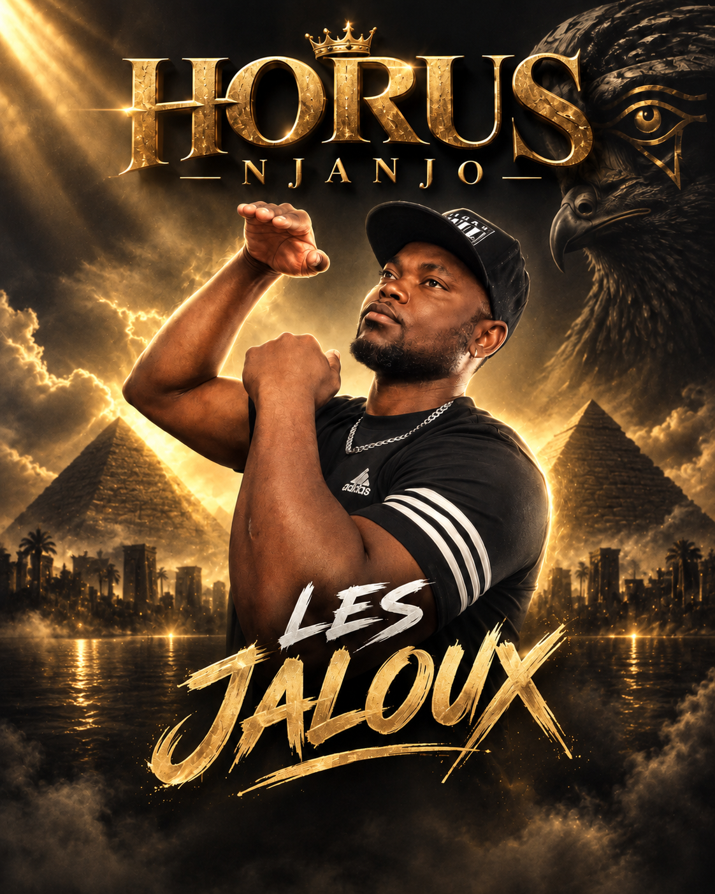
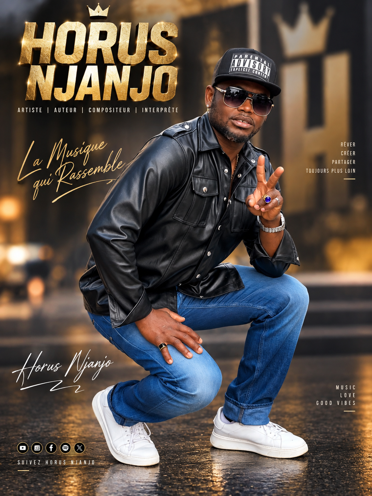
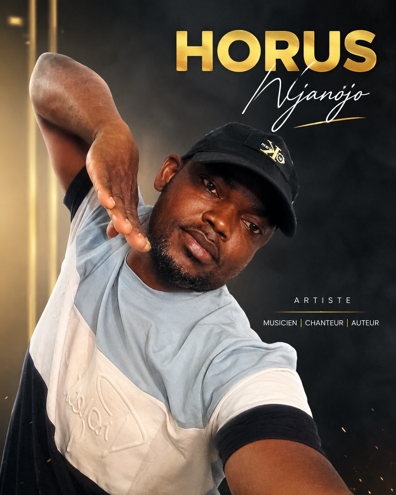

CLIP OFFICIEL
HORUS NJA NJANJO
◆ Chanteur · Auteur · Compositeur · Producteur
Une voix, une attitude, une vision. Entrez dans un univers où les rythmes du Cameroun rencontrent une énergie contemporaine.
PASSION · DISCIPLINE · CRÉATION
ÉCOUTER SUR LE SITE
Toute la musique.
Cliquez sur un titre : il se lance directement ici. Les morceaux s'enchaînent automatiquement pour vous plonger dans l'univers de l'artiste.
À LA UNE
Le dernier son.
NOUVEAU TITRE · SINGLELes Jaloux
Toujours plus loin, toujours plus haut. Horus Nja Njanjo transforme les regards et les obstacles en force créative et en message d'espoir pour la jeunesse africaine.

YOUTUBE OFFICIEL
Les clips.
Regardez les vidéos officielles de Horus Nja Njanjo avec la meilleure qualité, directement sur le site.
CLIP OFFICIEL
Chacun a son jour
VIDÉO
Le mépris
VIDÉO
Les Jaloux — version vidéo
EN DIRECT DES RÉSEAUX
Actualités.
Suivez les dernières publications, annonces et coulisses directement depuis Facebook.

BIOGRAPHIE & INFLUENCES
Qui est Horus ?
Artiste · Musicien · Chanteur · Auteur · Compositeur · Interprète · Producteur
Horus Nja-Njanjo est un jeune artiste camerounais visionnaire, né au Cameroun, de père Douala et aux racines Malimba.
Il commence la musique en 2010 dans l'univers du hip-hop, avant de construire un style bien à lui : une fusion authentique où se mêlent les percussions et rythmes traditionnels du Cameroun, la poésie de la rue et une énergie musicale contemporaine.
Avec un talent reconnu pour l'écriture et la composition, il produit des morceaux qui résonnent avec le quotidien, les joies et les luttes de son public.
Sa devise, « La musique qui rassemble », est une invitation à rêver, créer, partager, sans jamais oublier ses racines, et aller toujours plus loin vers l'excellence.
SCÈNES, SPECTACLES & BOOKING
Sur scène.
Pour vos shows, concerts, soirées de gala et événements professionnels, contactez l'équipe de production de Horus Nja Njanjo.
Service de communication (Cameroun) +237 6 99 95 80 89
Management & International
+33 7 75 72 64 81
+33 7 49 72 36 34

LIVE
Soirée de gala
SHOW
En live
SPECTACLE
Sur scène
PORTFOLIO
En images.
Portraits, affiches et moments forts. Cliquez sur une photo pour l'agrandir.

« Passion. Discipline. Création. »